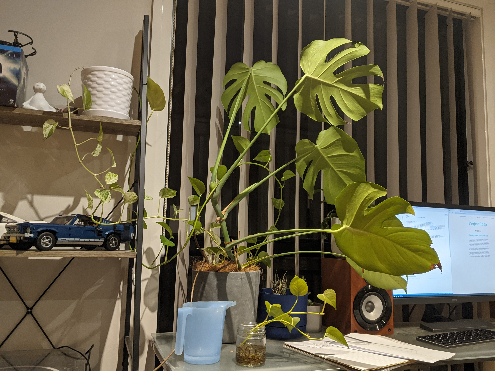

I would like to create a system for measuring the moisture and pH levels in the soil of each of my pot plants. As I have quite variety of plants to maintain I would like to receive information and reminders on each individual plant. Each pot will have a pH probe and soil moisture sensor inserted into the soil, these will be connected with a cable to a central unit. This central unit will then process the data and send an email when watering is required and update a website with the status of each plant.
The motivation for this project is to keep my plants in optimal growing conditions year round. During the winter my indoor plants do not receive as much light and thus require less watering, often I will forget to water them until the soil is bone dry, this will slow down the photosynthesis and affect growth (VanDerZanden A, January 2008). In the summer my plants are in direct sunlight for a good part of the day and suck up plenty of water, I would like to keep the water levels topped up without drowning the plants and take advantage of the extra sunlight. I’d also like to collect information on pH levels as it affects nutrient uptake (Perry L, 2003)
The proposed project would involve burying a couple small probes into the soil of a pot plant and connecting the probes to a raspberry pi with a bundle of thin wires. Both probes feature metallic ends which measure resistance in the soil, the metallic ends will be exposed to moisture. Only the ends of the probes should be exposed to moisture but there is the potential risk of other parts being exposed, most of the equipment will need to be waterproofed. To measure the soil moisture a probe like the Kuman Soil Moisture Sensor (1) may be used. For pH measurements the Grove PH Sensor Kit (2) can be employed.
The Raspberry Pi should then be able to read signals from each probe. These signals will have to be interpreted with a program on the Pi. The Pi will need to be able to take inputs from multiple pairs of probes and whilst keeping each input separate. Each input will have to be processed into a meaningful statistic and then sent elsewhere for the user to view. When the data reaches certain thresholds an alert can be sent to the user via email once per day. These alerts will provide updates on which plant requires watering.
Once the Pi has processed the information it can be stored locally. Updates will be sent to a website on a regular basis. The site will feature each individual plant with an identifying tag and display the readings which will be updated regularly. When levels go below a certain threshold the Pi will send alert emails to the user, limited to once per day to avoid spamming.
Flow: Probes in pot plants → Signals sent to Raspberry Pi → Signals processed into meaningful information → Pi emails user when levels fall below threshold and sends regular updates to website.
This project will several pieces of hardware to function:
In addition to the hardware it is likely that a large amount of programming will be necessary. The Pi will need a program for converting the incoming signals into meaningful information. That information will then need to be analysed and alerts sent out via emails written in another program. Information will also be uploaded to a website which will need to be coded and put online.
For this project to be successfully completed someone with software skills in Python, HTML and CSS, and working with Raspberry Pi OS will be required. The project will require a continuous stream of information to be processed into chunks of useful information.
This project will also require hardware skills, sensors will need to be correctly wired up to the Pi, wires may need soldering and connections will need to be tested. The correct sensors and parts will need to be sourced. The moisture sensors will require careful calibration.
This project will be feasible but knowledge in a lot of areas will be required, it may not be possible to complete this project alone within a reasonable timeframe. It is likely that external expertise will be required.
With the success of this project I will no longer have to actively monitor the soil in each pot plant. Provided everything goes to plan, I should receive an email alert daily with each plant that requires watering. I don’t believe there will be a large impact for this project in the residential space, however it could be useful in maintaining greenery in offices and shopping centres. The most important impact from the development of this project is the wide exposure to various parts of the IT industry and skills acquired through implementing each part of the project.
Ann Marie VanDerZanden, Master Gardener statewide coordinator, Oregon State University, 2008
environmental-factors-affecting-plant-growth
Leonard Perry, Extension Professor, University of Vermont extension department of plants and soil science, 2003
pH for the Garden